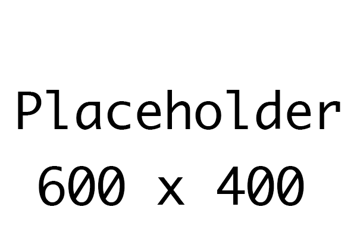

Section 13 of 21
Next Section →
Video Tutorials
━━━━━━━━━━━━━━━━━━━━Section 13 Videos
Watch: "Infinite Scaling & Difficulty"
Section 13: Infinite Scaling & Difficulty
Make waves infinitely harder with scaling multipliers
Section Progress: 0%
1
Endless Means the List Loops
- After the last wave definition, the next wave starts back at the first one, using logic to make it harder than before.
- Open scripts/wave_manager.gd and replace start_wave with this:
func start_wave():
if waves.is_empty():
print("No waves")
return
var def_index = Global.current_wave % waves.size()
current_cycle = Global.current_wave / waves.size()
current_wave_def = waves[def_index]
spawn_queue.clear()
for entry in current_wave_def.entries:
if entry.is_boss:
print("Boss wave!")
for i in entry.enemy_count:
spawn_queue.append(entry.enemy_scene)
if spawn_queue.is_empty():
print("Wave is empty")
return
spawning_done = false
wave_active = true
spawn_timer.wait_time = current_wave_def.spawn_interval
spawn_enemy()- The old No more waves guard goes away. That guard was the dead end. Without it, waves never run out.
- % means modulo. It gives the remainder after division, so for three waves the index counts 0, 1, 2, 0, 1, 2, and the list wraps back to the first definition.
- Integer division drops the remainder, so current_wave / waves.size() counts completed loops. It is 0 for the first pass through the list, 1 for the second, and so on.
- Add current_cycle to the state at the top of the script, next to wave_active and spawn_queue:
var current_cycle = 0
var current_wave_def: WaveDef
- The boss print from Section 12 stays in the loop, so boss waves still announce themselves.
- The empty guard stays. Modulo by zero is an error, so an empty waves array still needs its own message.
- current_wave keeps counting forever, nothing resets it except the whole game resetting.

Figure 13.1: Looping the wave list with modulo
2
Stronger Enemies Each Cycle
- Looping alone does not progress difficulty, each cycle must hit harder. Add two exports to scripts/wave_manager.gd:
@export var health_growth = 0.25
@export var damage_growth = 1- In spawn_enemy, scale the fresh instance between instantiate and add_child:
func spawn_enemy():
var follow = PathFollow3D.new()
follow.loop = false
path.add_child(follow)
var enemy = spawn_queue.pop_front().instantiate()
enemy.max_health = roundi(enemy.max_health * (1.0 + current_cycle * health_growth))
enemy.damage = enemy.damage + current_cycle * damage_growth
follow.add_child(enemy)
if spawn_queue.is_empty():
spawning_done = true
else:
spawn_timer.start()- 1.0 + current_cycle * health_growth is the wave difficulty multiplier. Cycle 0 multiplies by 1, so the first pass is unchanged, cycle 1 multiplies health by 1.25, and so on.
- Mine is 0.25 for health_growth and 1 for damage_growth, but yours can be anything. Your GDD decides how fast difficulty climbs.
- roundi keeps the scaled max_health a whole number.
- The scaling lines come before add_child on purpose. Enemy _ready sets health from max_health when the enemy enters the tree, so scaling after add_child would leave health at the unscaled value.
- Each enemy is a fresh instance from the scene, so scaling always starts from the scene's base values. Nothing compounds by accident from one spawn to the next.
Figure 13.2: Scaling enemy stats per cycle
3
More Enemies, Tighter Spacing
- Strength is only half the difficulty curve. Later cycles should also send more enemies, closer together. Add three exports to scripts/wave_manager.gd:
@export var extra_enemies_per_cycle = 2
@export var interval_shrink = 0.1
@export var min_interval = 0.3- Change the queue loop in start_wave, so every entry grows with the cycle:
for entry in current_wave_def.entries:
if entry.is_boss:
print("Boss wave!")
var count = entry.enemy_count + current_cycle * extra_enemies_per_cycle
if entry.is_boss:
count += current_cycle
for i in count:
spawn_queue.append(entry.enemy_scene)- Change the wait_time line in start_wave:
spawn_timer.wait_time = maxf(current_wave_def.spawn_interval - current_cycle * interval_shrink, min_interval)- Cycle 1 adds 2 enemies to each entry, cycle 2 adds 4 to each entry. A wave with two entries grows by 4, then 8. The count grows with the cycle, not by a fixed amount.
- Boss entries gain one extra boss per cycle, on top of the normal extras, so a boss entry grows by 3 in cycle 1, not 2, and cycle 0 adds nothing.
- The queue is built once when the wave starts, so the extra enemies join before the first spawn.
- The interval shrinks by 0.1 each cycle, so later waves bunch up. maxf stops it at 0.3 no matter how many cycles pass. Without the floor, the interval would eventually hit zero and the whole wave would spawn at once.
- Mine is 2 extra enemies, a 0.1 shrink, and a 0.3 floor, but yours can be anything. Your GDD decides the pace.
- The wait_time is set once when the wave starts, and every spawn in that wave uses it.
Figure 13.3: Scaling wave size and pacing
4
Prints Before a HUD
- There is no HUD yet, so print the wave and the cycle when a wave starts. Add this line to start_wave, right after current_wave_def is set:
print("Wave ", Global.current_wave + 1, " cycle ", current_cycle)- Global.current_wave counts completed waves, so the wave being started is current_wave + 1 in human counting.
- Watch the Output panel as you play past your last hand-authored wave. The cycle number rises, and the damage numbers should change.
- If the numbers feel wrong, change the exports in the Inspector. No code changes are needed to retune.
💡 GDD Check: Check your GDD. How steep is your difficulty curve? Small growth numbers make long runs. Big ones make short brutal runs. Tuning the curve is a design decision, but keep in mind that no player enjoys an impossible game.
Figure 13.4: Printing wave and cycle numbers
5
Testing the Loop
- Press F6 and then press your start wave button.
- Play through all your hand-authored waves. The Output panel prints each wave and its cycle.
- Keep playing past the last one. The next wave restarts at your first definition, with more enemies and tougher stats. Waves never stop.
- Play until a boss wave repeats in cycle 1, and count its bosses: one extra boss spawns, on top of the normal extras.
- Watch a camped enemy at the Base. Scaling does not change the camp rule from Section 12. It still attacks the fence until your towers kill it or the fence falls.
- Let a later-cycle wave run. Counts are higher, spacing is tighter, and enemies take more hits to kill.
💡 If endless waves will not scale:
- Waves stop after the last one: the No more waves guard is still in start_wave. Replace it with the modulo lines.
- Same difficulty every cycle: current_cycle is never set, or the scaling lines are missing from spawn_enemy. Check start_wave sets it and spawn_enemy uses it.
- Enemies have unscaled health: the scaling lines are after add_child, so _ready already set health from the unscaled max_health. Move them before add_child.
- Whole wave spawns at once: the interval floor is missing, so wait_time hit zero. Check the maxf line in start_wave.
- Error about division by zero: the waves array is empty. Drag a wave resource into a slot.
- More enemies than expected: extra_enemies_per_cycle adds to each entry, so a wave with two entries gains twice the extra number per cycle. That is the design, not a bug.
- Extra enemies are all one type: the extra count sits outside the entry loop, so only one entry grows. Check the extra count is inside the entry loop, so every entry grows.
- No extra boss in cycle 1: the boss bonus is missing from the queue loop, or the entry's is_boss is off. Check the loop and the entry.
Figure 13.5: Testing endless waves